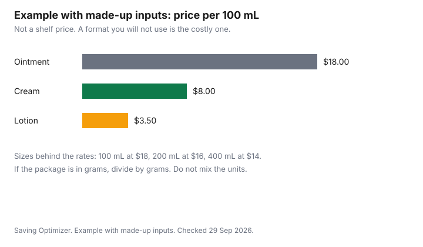

Personal Care · Canada
Winter Dry Skin on a Budget: Moisturisers, Humidity and Habits
To manage winter dry skin in Canada on a budget, compare moisturisers by price per 100 mL or 100 g, and keep indoor humidity between 30 and 50 percent, as Health Canada recommends. Measure humidity before running a humidifier. Winter skin gets expensive when every new jar is a new brand and the air in the house is either desert-dry or wet enough to grow mould. The spending levers are the format on the label, the size you will finish, and the humidity you measure. This page is education, not a treatment plan and not a product ranking. A short routine is the drugstore routine guide. Store-brand toiletries are the pharmacy brands guide. The heating bill is the winter heating guide. A pharmacist's scope in Ontario is the minor-ailments guide.
Key takeaways
- Health Canada's guide to moisture and mould indoors, published January 2023, says to keep indoor relative humidity between 30 and 50 percent. Above that, or when windows sweat, the same guide tells you to reduce moisture.
- Ointment, cream, and lotion are words on a package. Compare price per 100 millilitres or 100 grams, the ingredient list, and whether you will use it. A higher price is not evidence it works better.
- A store brand is a size and an ingredient-list comparison. If the package prints a DIN or an NPN, look it up before you treat the jar as a basic cosmetic.
- Measure humidity before you run a humidifier. If windows are wet, Health Canada's checklist includes unplugging humidifiers.
- This page does not diagnose. See a pharmacist or a doctor for a skin problem you are not comfortable treating as ordinary dryness.
Why Canadian winters dry skin
Cold outdoor air holds less moisture. Heating that air indoors, without adding moisture on purpose, leaves a low relative humidity.
Health Canada's guide to addressing moisture and mould indoors, published January 2023 and current as of 29 Sep 2026, does not set a skin-treatment protocol. It does set a building target: maintain relative humidity between 30 and 50 percent, and deal with condensation so mould does not follow. The dry-skin problem and the mould problem sit on opposite sides of that band.
People living in damp, mouldy homes are more likely, Health Canada says in that guide, to have eye, nose, and throat irritation, coughing, wheezing, and worsening asthma symptoms. That is a reason not to chase comfort by pushing humidity until the windows run. It is not a diagnosis of your skin. The heating system that dries the air is also a bill. The winter heating guide is where the energy arithmetic lives. Do not turn a humidifier into a heating strategy.
Ointments vs creams vs lotions
The package uses these words to describe a format. An ointment, a cream, and a lotion are not ranked here, and this page does not claim one treats a medical condition.
What you can compare in the store is the size, the price per 100 millilitres or per 100 grams, the ingredient list, and whether you will actually apply it. A heavy ointment you hate will sit in a drawer. A light lotion you use every day can cost less per month even when the bottle price looks higher. Fragrance-free is a preference you can read on the label if fragrance has bothered you before. It is not a clinical claim this page makes.
Example with made-up inputs. A made-up ointment is $18 for 100 millilitres, so $18 per 100 millilitres. A made-up cream is $16 for 200 millilitres, so $8 per 100 millilitres. A made-up lotion is $14 for 400 millilitres, so $3.50 per 100 millilitres. Those are not shelf prices. They show the division. Your jar may be labelled in grams. Divide by the unit the package prints, and do not compare a gram price with a millilitre price as if they were the same. If you will not finish the large lotion, price only the portion you will use.
If the box prints a DIN, search it in Health Canada's Drug Product Database at health-products.canada.ca/dpd-bdpp. If it prints an NPN, use the Licensed Natural Health Products Database. A database hit means the product is in that system. It is not a promise about your skin. A cosmetic has no DIN. The pharmacy brands guide is the side-by-side method. Sunscreen is a separate label, on the sunscreen guide, and it is not a winter moisturiser substitute.
Store-brand options
A store brand is worth a trial when you are buying a basic moisturiser, you can read the ingredient list, and the size matches how fast you finish a jar. It is a poor trial when you need a specific active you already know by name and the store brand does not list it.
No banner is ranked here. The toiletries price-check sheet is where you write the unit prices you see at Costco, Walmart, Shoppers, and Dollarama. An Amazon.ca listing is another offer type. The seller and the size still have to go through the same division.
Buy the smallest size the first time. A return is only useful if that retailer's page allows it after opening. Do not stock a winter's worth of a formula you have not worn for two weeks. The routine guide keeps the steps short on purpose: cleanse, moisturise, sunscreen. Extra steps are optional spending.
Humidifier basics
Measure before you add water. Health Canada's mould guide says to maintain relative humidity between 30 and 50 percent.
In the section on condensation on windows, the checklist says to unplug and remove humidifiers, dry the frames and sills, and keep humidity in that band. A humidifier is a tool for a room that measures below the bottom of the band, used according to the manufacturer's instructions, and turned down or off when moisture shows up on cold glass. It is not a skin prescription.
Clean the unit the way its manual says. Standing water is a mould problem, which is the hazard the Health Canada guide is written to reduce. A whole-home system and a portable unit are different machines. Price the one you will maintain. The energy to run it belongs on the heating-bill page, not as an afterthought. If you rent, check whether the lease or the building already controls humidity before you buy a second machine.
When should you see a doctor?
Ordinary dryness that eases when you moisturise and you are comfortable managing it is a shopping question. Anything else is a care question.
This page does not list symptoms as a diagnosis and does not tell you to wait. In Ontario, some minor ailments can be assessed by a pharmacist under the rules on the minor-ailments guide. Other provinces draw that list differently. See a doctor when a pharmacist tells you to, or when you want a clinician rather than a jar. Do not treat a DIN lookup as medical advice.
Cracked skin that you think is infected, a rash you do not recognize, or dryness that comes with illness is a reason to get care, not a reason to buy a larger tub. Nothing on this page is a treatment claim. Health Canada's cosmetics pages are for reporting a cosmetic problem, not for treating a disease.
| Step | What to do | Source or limit |
|---|---|---|
| Showers | Shorter, lukewarm showers leave more of your own moisture than long hot ones. This is a habit, not a priced product | Household practice. Not a Health Canada dose |
| Fragrance-free ointment, cream, or lotion | Pick the format you will use. Compare price per 100 millilitres or 100 grams and the ingredient list | Label words. No efficacy ranking. DIN or NPN: look it up if printed |
| Humidity | Measure, then aim for the band below. Reduce moisture if windows sweat | Health Canada mould guide, January 2023: 30 to 50 percent relative humidity |
| Gloves | Cover hands in the cold and when you wash dishes if water and wind are when your skin splits | A barrier habit. Not a medical device claim |
| A skin condition | Stop shopping and ask a pharmacist or a doctor | Ontario minor-ailment rules are on the healthcare guide. This page does not diagnose |
| Reading | What the guide supports | Trade-off |
|---|---|---|
| Below 30 percent | The stated band starts at 30 percent. A humidifier is a way to raise a low reading, if you measure first | Adding moisture without measuring can push you into condensation |
| 30 to 50 percent | Maintain relative humidity in this range | The guide's target for the house, not a promise about skin |
| Above 50 percent, or wet windows | Reduce moisture. The window checklist says to unplug and remove humidifiers, dry sills, and repair leaks | Health Canada ties dampness and mould to irritation and worsening asthma symptoms. Do not overshoot comfort |

Sources
- Health Canada, Guide to addressing moisture and mould indoors, published January 2023, as of 29 Sep 2026. Maintain relative humidity between 30 and 50 percent. Window-condensation checklist includes unplugging humidifiers. Damp, mouldy homes are linked to irritation, cough, wheeze, and worsening asthma symptoms. Health Canada does not recommend air testing for mould in most situations.
- Health Canada cosmetics information: canada.ca/en/health-canada/services/cosmetics.html, for reporting a cosmetic problem. Not a treatment page.
- Health Canada Drug Product Database search: health-products.canada.ca/dpd-bdpp. Use it when a package prints a DIN. Natural health products use the Licensed Natural Health Products Database when an NPN is printed.
- The ointment, cream, and lotion prices are made-up inputs. No moisturiser is named or ranked. Not medical advice.
Frequently asked questions
What helps dry skin in a Canadian winter?
Keep indoor relative humidity between 30 and 50 percent, which is the band in Health Canada's January 2023 mould guide, and use a moisturiser format you will actually apply. Shorter lukewarm showers and gloves are habits, not products this page prices. If windows are wet, reduce moisture instead of adding it. This is education, not a treatment plan.
Is an expensive moisturiser better?
This page does not say so. Compare the ingredient list, the size, and the price per 100 millilitres or 100 grams. Example with made-up inputs: $18, $8, and $3.50 per 100 millilitres are arithmetic, not shelf prices and not a clinical result, and a jar you will not finish is the costly one. If a DIN or an NPN is printed, look it up rather than guessing from the price.
Should I use a humidifier?
Measure first. Health Canada's mould guide says to keep relative humidity between 30 and 50 percent, so a humidifier is a way to raise the reading if the room is below that and you will clean the unit as the manual says. If windows are sweating, the same guide's checklist says to unplug humidifiers. Overshooting the band is a mould problem, not a skin win.
When is dry skin something to see a doctor about?
When you are not comfortable treating it as ordinary dryness, or when a pharmacist says you should. This page does not list symptoms as a diagnosis and does not tell you to wait. In Ontario, some minor ailments are in a pharmacist's scope, and that list is on the healthcare guide, while other provinces differ. A cosmetic report to Health Canada is not a medical visit.
Are store-brand moisturisers OK?
They are a reasonable trial when the ingredient list and the size match what you already use, and you buy a size you can finish or return. They are a different product when a named active you rely on is missing. No banner is ranked here, and the pharmacy brands guide is the comparison method. Not medical advice.
Researched and drafted with AI assistance and fact-checked against official Canadian sources. How we create content.
Disclosure: Amazon.ca storefront types are an offer type. Saving Optimizer may earn a commission if a partner link is added later. No storefront partnership is claimed. A listing does not make a moisturiser appropriate for your skin. Education only. Not medical advice.